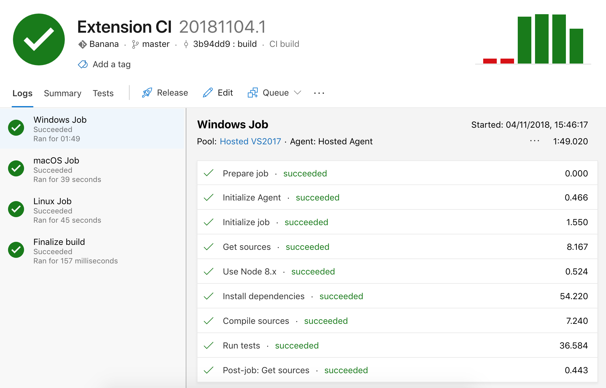

Continuous Integration
Extension integration tests can be run on CI services. The @vscode/test-electron library helps you set up extension tests on CI providers and contains a sample extension setup on Azure Pipelines. You can check out the build pipeline or jump directly to the azure-pipelines.yml file.
Automated publishing
You can also configure the CI to publish a new version of the extension automatically.
The publish command is similar to publishing from a local environment using vsce, but you must somehow provide the Personal Access Token (PAT) in a secure way. By storing the PAT as a VSCE_PAT secret variable, vsce will be able to use it. Secret variables are never exposed, so they are safe to use in a CI pipeline.
Azure Pipelines
Azure Pipelines is great for running VS Code extension tests as it supports running the tests on Windows, macOS, and Linux. For Open Source projects, you get unlimited minutes and 10 free parallel jobs. This section explains how to set up an Azure Pipelines for running your extension tests.
First, create a free account on Azure DevOps and create an Azure DevOps project for your extension.
Then, add the following azure-pipelines.yml file to the root of your extension's repository. Other than the xvfb setup script for Linux that is necessary to run VS Code in headless Linux CI machines, the definition is straight-forward:
trigger:
branches:
include:
- main
tags:
include:
- v*
strategy:
matrix:
linux:
imageName: 'ubuntu-latest'
mac:
imageName: 'macos-latest'
windows:
imageName: 'windows-latest'
pool:
vmImage: $(imageName)
steps:
- task: NodeTool@0
inputs:
versionSpec: '10.x'
displayName: 'Install Node.js'
- bash: |
/usr/bin/Xvfb :99 -screen 0 1024x768x24 > /dev/null 2>&1 &
echo ">>> Started xvfb"
displayName: Start xvfb
condition: and(succeeded(), eq(variables['Agent.OS'], 'Linux'))
- bash: |
echo ">>> Compile vscode-test"
yarn && yarn compile
echo ">>> Compiled vscode-test"
cd sample
echo ">>> Run sample integration test"
yarn && yarn compile && yarn test
displayName: Run Tests
env:
DISPLAY: ':99.0'
Finally, create a new pipeline in your DevOps project and point it to the azure-pipelines.yml file. Trigger a build and voilà:

You can enable the build to run continuously when pushing to a branch and even on pull requests. See Build pipeline triggers to learn more.
Azure Pipelines automated publishing
- Set up
VSCE_PATas a secret variable using the Azure DevOps secrets instructions. - Install
vsceas adevDependencies(npm install @vscode/vsce --save-devoryarn add @vscode/vsce --dev). - Declare a
deployscript inpackage.jsonwithout the PAT (by default,vscewill use theVSCE_PATenvironment variable as the Personal Access Token).
"scripts": {
"deploy": "vsce publish --yarn"
}
- Configure the CI so the build will also run when tags are created:
trigger:
branches:
include:
- main
tags:
include:
- refs/tags/v*
- Add a
publishstep inazure-pipelines.ymlthat callsyarn deploywith the secret variable.
- bash: |
echo ">>> Publish"
yarn deploy
displayName: Publish
condition: and(succeeded(), startsWith(variables['Build.SourceBranch'], 'refs/tags/'), eq(variables['Agent.OS'], 'Linux'))
env:
VSCE_PAT: $(VSCE_PAT)
The condition property tells the CI to run the publish step only in certain cases.
In our example, the condition has three checks:
succeeded()- Publish only if the tests pass.startsWith(variables['Build.SourceBranch'], 'refs/tags/')- Publish only if a tagged (release) build.eq(variables['Agent.OS'], 'Linux')- Include if your build runs on multiple agents (Windows, Linux, etc.). If not, remove that part of the condition.
Since VSCE_PAT is a secret variable, it is not immediately usable as an environment variable. Thus, we need to explicitly map the environment variable VSCE_PAT to the secret variable.
GitHub Actions
You can also configure GitHub Actions to run your extension CI. In headless Linux CI machines xvfb is required to run VS Code, so if Linux is the current OS run the tests in an Xvfb enabled environment:
on:
push:
branches:
- main
jobs:
build:
strategy:
matrix:
os: [macos-latest, ubuntu-latest, windows-latest]
runs-on: ${{ matrix.os }}
steps:
- name: Checkout
uses: actions/checkout@v3
- name: Install Node.js
uses: actions/setup-node@v3
with:
node-version: 16.x
- run: npm install
- run: xvfb-run -a npm test
if: runner.os == 'Linux'
- run: npm test
if: runner.os != 'Linux'
GitHub Actions automated publishing
- Set up
VSCE_PATas an encrypted secret using the GitHub Actions secrets instructions. - Install
vsceas adevDependencies(npm install @vscode/vsce --save-devoryarn add @vscode/vsce --dev). - Declare a
deployscript inpackage.jsonwithout the PAT.
"scripts": {
"deploy": "vsce publish --yarn"
}
- Configure the CI so the build will also run when tags are created:
on:
push:
branches:
- main
release:
types:
- created
- Add a
publishjob to the pipeline that callsnpm run deploywith the secret variable.
- name: Publish
if: success() && startsWith(github.ref, 'refs/tags/') && matrix.os == 'ubuntu-latest'
run: npm run deploy
env:
VSCE_PAT: ${{ secrets.VSCE_PAT }}
The if property tells the CI to run the publish step only in certain cases.
In our example, the condition has three checks:
success()- Publish only if the tests pass.startsWith(github.ref, 'refs/tags/')- Publish only if a tagged (release) build.matrix.os == 'ubuntu-latest'- Include if your build runs on multiple agents (Windows, Linux, etc.). If not, remove that part of the condition.
GitLab CI
GitLab CI can be used to test and publish the extension in headless Docker containers. This can be done by pulling a preconfigured Docker image, or installing xvfb and the libraries required to run Visual Studio Code during the pipeline.
image: node:12-buster
before_script:
- npm install
test:
script:
- |
apt update
apt install -y libasound2 libgbm1 libgtk-3-0 libnss3 xvfb
xvfb-run -a npm run test
GitLab CI automated publishing
- Set up
VSCE_PATas a masked variable using the GitLab CI documentation. - Install
vsceas adevDependencies(npm install @vscode/vsce --save-devoryarn add @vscode/vsce --dev). - Declare a
deployscript inpackage.jsonwithout the PAT.
"scripts": {
"deploy": "vsce publish --yarn"
}
- Add a
deployjob that callsnpm run deploywith the masked variable which will only trigger on tags.
deploy:
only:
- tags
script:
- npm run deploy
Travis CI
@vscode/test-electron also includes a Travis CI build definition. The way to define environment variables in Travis CI is different from other CI frameworks, so the xvfb script is also different:
language: node_js
os:
- osx
- linux
node_js: 10
install:
- |
if [ $TRAVIS_OS_NAME == "linux" ]; then
export DISPLAY=':99.0'
/usr/bin/Xvfb :99 -screen 0 1024x768x24 > /dev/null 2>&1 &
fi
script:
- |
echo ">>> Compile vscode-test"
yarn && yarn compile
echo ">>> Compiled vscode-test"
cd sample
echo ">>> Run sample integration test"
yarn && yarn compile && yarn test
cache: yarn
Travis CI automated publishing
- Set up
VSCE_PATas an encrypted secret using the Travis CI encryption key usage instructions. - Install
vsceas adevDependencies(npm install @vscode/vsce --save-devoryarn add @vscode/vsce --dev). - Declare a
deployscript inpackage.jsonwithout the PAT.
"scripts": {
"deploy": "vsce publish --yarn"
}
- Add
deploystage that callsnpm run deploywith the secret variable.
deploy:
provider: script
script: "npm run deploy"
skip_cleanup: true
on:
tags: true
The deploy property tells the CI to deploy artifacts to a given provider if a set of conditions are met. The deploy stage does not get triggered on pull requests
In our example, the condition that is checked:
tags: true- Publish only if the build is triggered from a git tag (releast)skip_cleanup: true- Prevents travis from removing any files created during the build that may be needed for deployment.
Common questions
Do I need to use Yarn for continuous integration?
All of the above examples refer to a hypothetical project built with Yarn, but can be adapted to use npm, Grunt, Gulp, or any other JavaScript build tool.